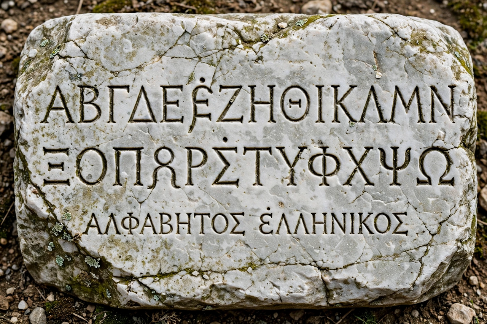

| Greek alphabet | |
|---|---|
 | |
| Type | Alphabet |
| Period | c. 800 BCE – present |
| Parent system | Phoenician alphabet |
| Child systems | Latin, Cyrillic, Coptic, Gothic, Glagolitic |
| Letters | 24 |
The Greek alphabet has been used to write the Greek language since the late 9th or early 8th century BCE. It is derived from the earlier Phoenician alphabet and was the first alphabetic script in history to have distinct letters for vowels as well as consonants. In its turn it is the ancestor of the Latin and Cyrillic alphabets, and its letters remain in wide use as symbols in mathematics and science.
Greek speakers adapted the Phoenician consonantal script around 800 BCE, reassigning several letters they did not need — such as ʾālep and ʿayin — to vowel sounds, an innovation that made writing far easier to learn and read unambiguously. Archaic local variants (epichoric alphabets) differed between city-states until the Ionic alphabet of Miletus was officially adopted at Athens in 403 BCE and spread across the Greek world. Early Greek was written right-to-left or boustrophedon — alternating direction line by line "as the ox ploughs" — before settling left-to-right.
| Upper | Lower | Name | Upper | Lower | Name |
|---|---|---|---|---|---|
| Α | α | Alpha | Ν | ν | Nu |
| Β | β | Beta | Ξ | ξ | Xi |
| Γ | γ | Gamma | Ο | ο | Omicron |
| Δ | δ | Delta | Π | π | Pi |
| Ε | ε | Epsilon | Ρ | ρ | Rho |
| Ζ | ζ | Zeta | Σ | σ | Sigma |
| Η | η | Eta | Τ | τ | Tau |
| Θ | θ | Theta | Υ | υ | Upsilon |
| Ι | ι | Iota | Φ | φ | Phi |
| Κ | κ | Kappa | Χ | χ | Chi |
| Λ | λ | Lambda | Ψ | ψ | Psi |
| Μ | μ | Mu | Ω | ω | Omega |
Greek letters pervade mathematics and the sciences: π for the circle constant, Δ for change, Σ for summation, α, β and γ radiation, and Ω for the ohm. They also name fraternities, stars (Bayer designations), variants and much else; "alpha and omega" — first and last letters — became a figure of speech for totality.